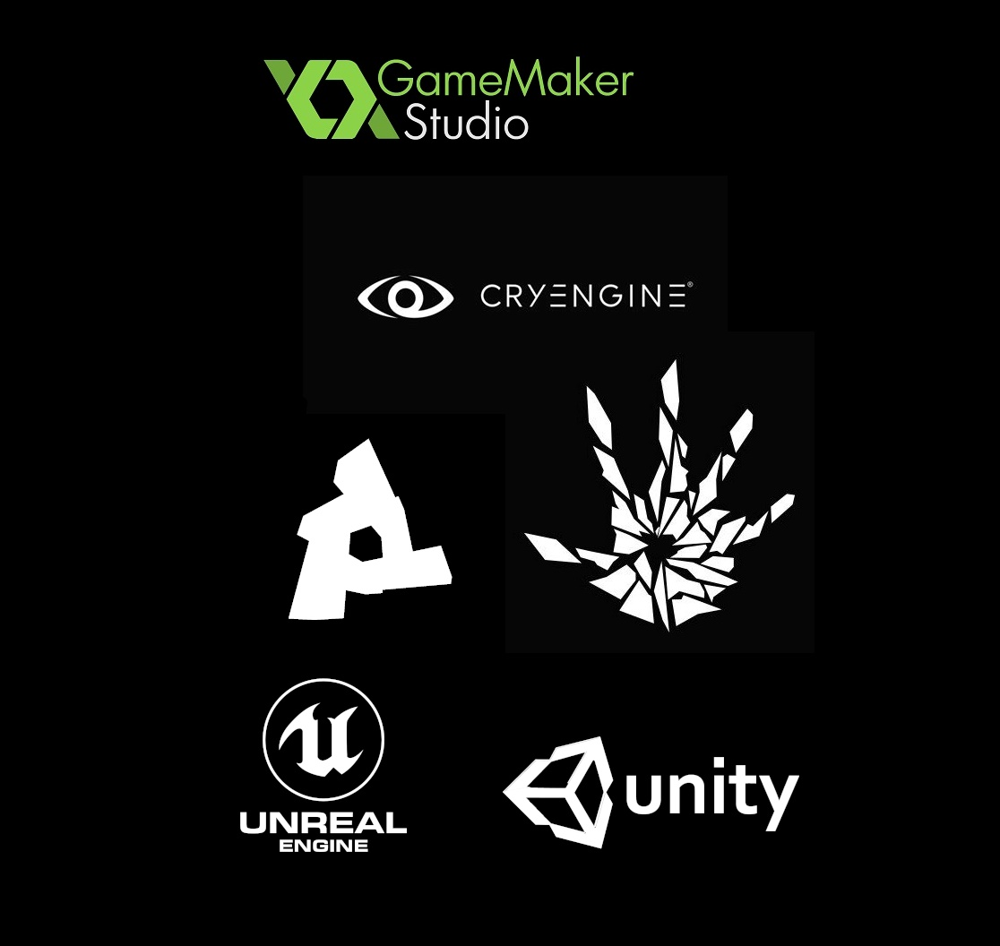

Silniki wykorzystywane do tworzenia gier
Gier na rynku jest setki, a nawet tysiące. Tworzenie ich zajmuje miesiące, a nawet lata. Pisane są w różnych językach z użyciem różnych silników takich jak:
- Unity(C#)
- Unreal Engine(C++)
- Doom Engine(C)
- Frostbite(C++)
- Clausewitz Engine
